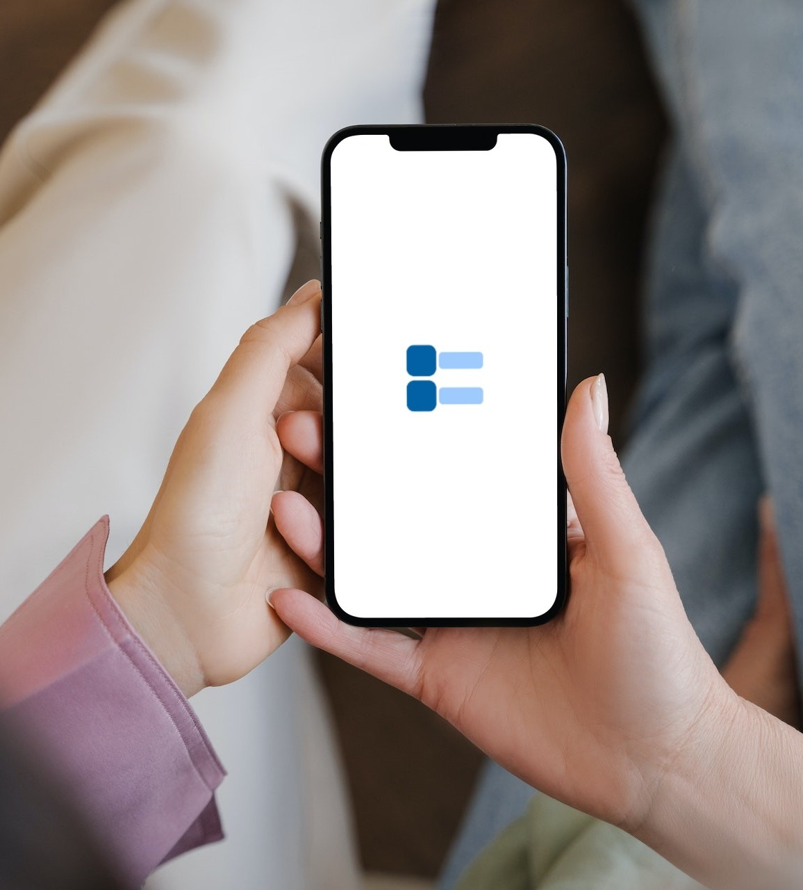
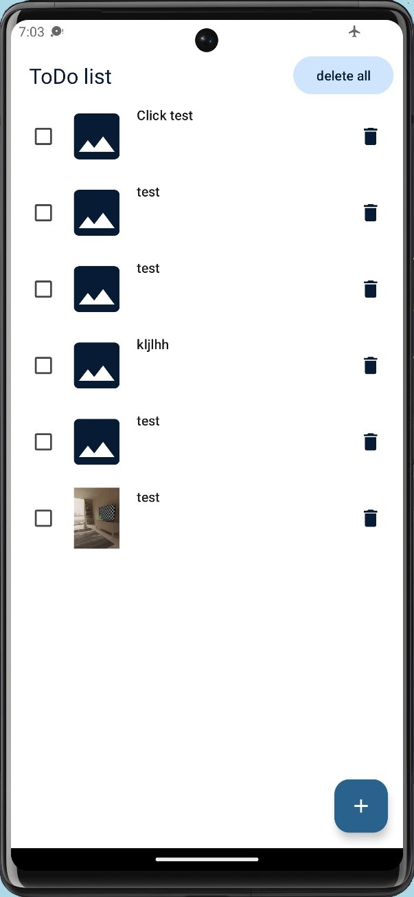
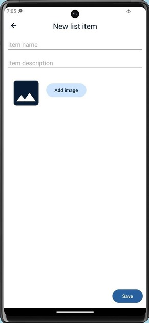

ToDoList
2024Eine Aufgabenliste, die sich Dinge besser merkt — weil zu jeder Notiz auch ein Bild gehören darf.

- Rolle
- Entwicklung & UI
- Team
- 2 Personen
- Kontext
- Studienprojekt, HdM Stuttgart
- Werkzeuge
- Android Studio · SQLite
Ein Bild sagt mehr als tausend Worte.
Leitgedanke des Projekts
Android von Grund auf verstehen
Im Zweierteam haben wir eine App in Android Studio entwickelt, aufbauend auf den Inhalten der Vorlesung. Grundkonzepte wie UI-Design, Datenhaltung und Hintergrundprozesse über Fragments, Broadcast Receiver und asynchrone Programmierung sind darin eingeflossen.
Die App nutzt Android-Bordmittel zur Datenspeicherung und stellt sie in einem bewusst schlichten, gut bedienbaren Interface dar.
Alles auf einen Blick
ToDoList erlaubt es, Aufgaben und Notizen mit optionalen Bildern anzulegen — das hilft beim Erinnern. Einträge lassen sich abhaken, löschen oder als ganze Liste leeren. Der Fokus lag auf intuitiver Bedienung und klarer Darstellung.

Aufgabe, Beschreibung, Bild
Aufgabe und Beschreibung eintragen — optional ein Foto oder Bild hinzufügen, um den Eintrag anzureichern. Jeder Eintrag kann als erledigt markiert oder entfernt werden, damit die Liste übersichtlich bleibt.
